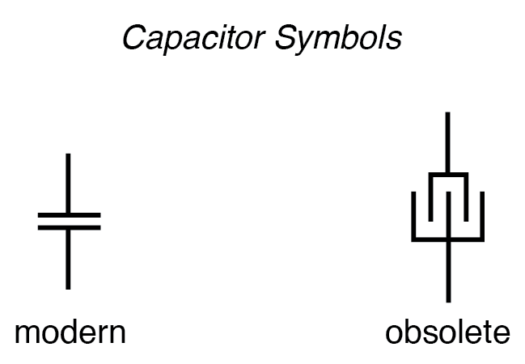
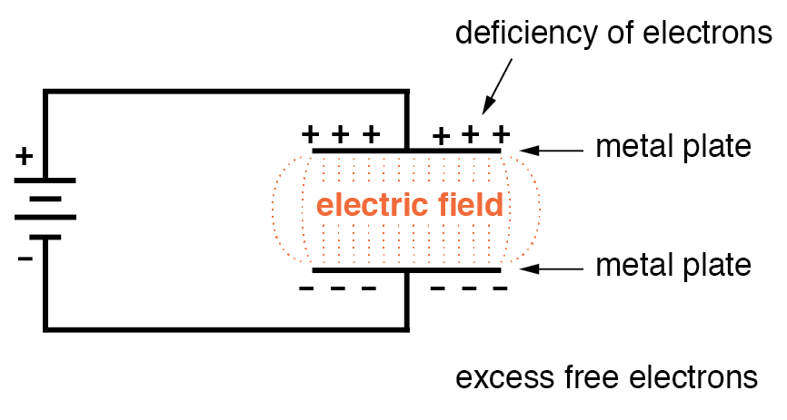
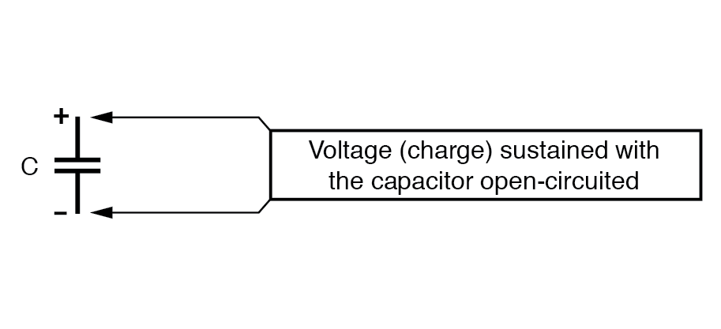
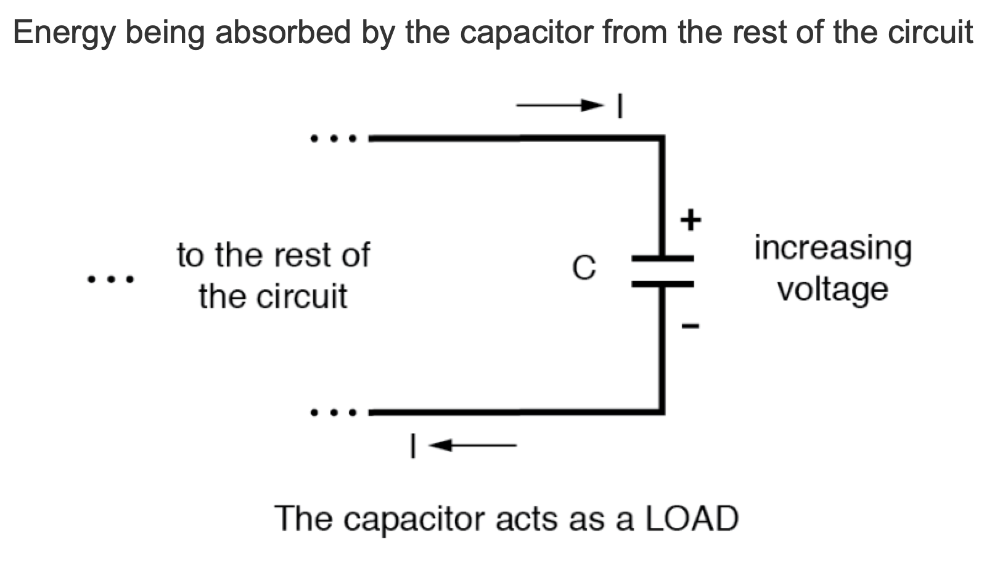
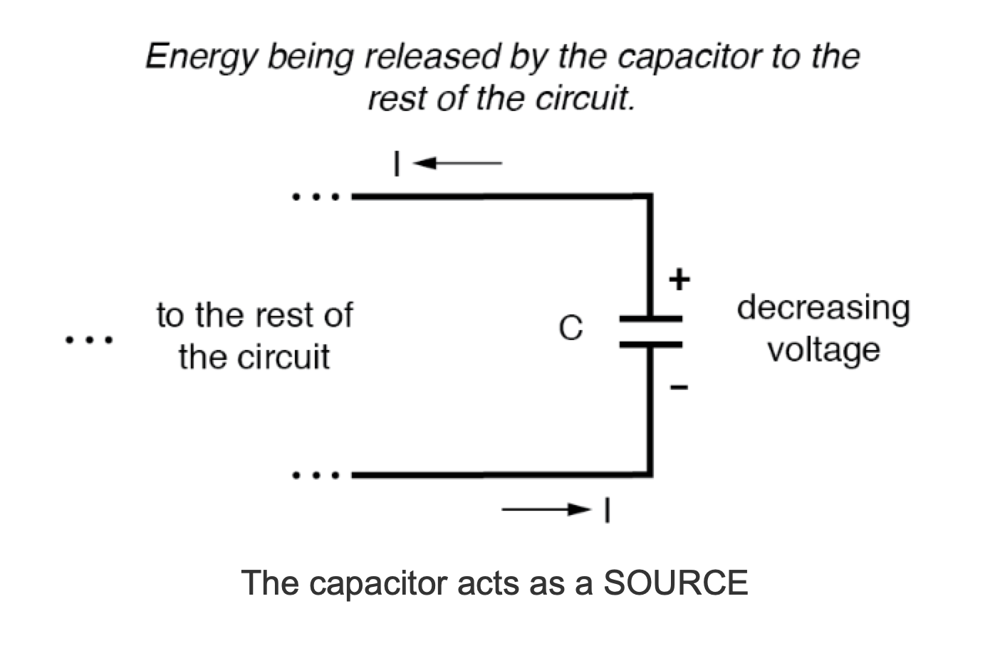

Whenever an electric voltage exists between two separated conductors, an electric field is present within the space between those conductors. In basic electronics, we study the interactions of voltage, current, and resistance as they pertain to circuits, which are conductive paths through which electrons may travel. When we talk about fields, however, we’re dealing with interactions that can be spread across empty space.
Admittedly, the concept of a “field” is somewhat abstract. At least with electric current, it isn’t too difficult to envision tiny particles called electrons moving their way between the nuclei of atoms within a conductor, but a “field” doesn’t even have mass, and need not exist within matter at all.
Despite its abstract nature, almost every one of us has direct experience with fields, at least in the form of magnets. Have you ever played with a pair of magnets, noticing how they attract or repel each other depending on their relative orientation? There is an undeniable force between a pair of magnets, and this force is without “substance.” It has no mass, no color, no odor, and if not for the physical force exerted on the magnets themselves, it would be utterly insensible to our bodies. Physicists describe the interaction of magnets in terms of magnetic fields in the space between them. If iron filings are placed near a magnet, they orient themselves along the lines of the field, visually indicating its presence.
The subject of this chapter is electric fields (and devices called capacitors that exploit them), not magnetic fields, but there are many similarities. Most likely you have experienced electric fields as well. Chapter 1 of this book began with an explanation of static electricity, and how materials such as wax and wool—when rubbed against each other—produced a physical attraction. Again, physicists would describe this interaction in terms of electric fields generated by the two objects as a result of their electron imbalances. Suffice it to say that whenever a voltage exists between two points, there will be an electric field manifested in the space between those points.
Fields have two measures: a field force and a field flux. The field force is the amount of “push” that a field exerts over a certain distance. The field flux is the total quantity, or effect, of the field through space. Field force and flux are roughly analogous to voltage (“push”) and current (flow) through a conductor, respectively, although field flux can exist in totally empty space (without the motion of particles such as electrons) whereas current can only take place where there are free electrons to move. Field flux can be opposed in space, just as the flow of electrons can be opposed by resistance. The amount of field flux that will develop in space is proportional to the amount of field force applied, divided by the amount of opposition to flux. Just as the type of conducting material dictates that the conductor’s specific resistance to electric current, the type of insulating material separating two conductors dictates the specific opposition to field flux.
Normally, electrons cannot enter a conductor unless there is a path for an equal amount of electrons to exit (remember the marble-in-tube analogy?). This is why conductors must be connected together in a circular path (a circuit) for continuous current to occur. Oddly enough, however, extra electrons can be “squeezed” into a conductor without a path to exit if an electric field is allowed to develop in space relative to another conductor. The number of extra free electrons added to the conductor (or free electrons taken away) is directly proportional to the amount of field flux between the two conductors.
Capacitors are components designed to take advantage of this phenomenon by placing two conductive plates (usually metal) in close proximity with each other. There are many different styles of capacitor construction, each one suited for particular ratings and purposes. For very small capacitors, two circular plates sandwiching an insulating material will suffice. For larger capacitor values, the “plates” may be strips of metal foil, sandwiched around a flexible insulating medium and rolled up for compactness. The highest capacitance values are obtained by using a microscopic-thickness layer of insulating oxide separating two conductive surfaces. In any case, though, the general idea is the same: two conductors, separated by an insulator.
The schematic symbol for a capacitor is quite simple, being little more than two short, parallel lines (representing the plates) separated by a gap. Wires attach to the respective plates for connection to other components. An older, obsolete schematic symbol for capacitors showed interleaved plates, which is actually a more accurate way of representing the real construction of most capacitors:

When a voltage is applied across the two plates of a capacitor, a concentrated field flux is created between them, allowing a significant difference of free electrons (a charge) to develop between the two plates:

As the electric field is established by the applied voltage, extra free electrons are forced to collect on the negative conductor, while free electrons are “robbed” from the positive conductor. This differential charge equates to a storage of energy in the capacitor, representing the potential charge of the electrons between the two plates. The greater the difference of electrons on opposing plates of a capacitor, the greater the field flux, and the greater the “charge” of energy the capacitor will store.
Because capacitors store the potential energy of accumulated electrons in the form of an electric field, they behave quite differently than resistors (which simply dissipate energy in the form of heat) in a circuit. Energy storage in a capacitor is a function of the voltage between the plates, as well as other factors that we will discuss later in this chapter. A capacitor’s ability to store energy as a function of voltage (potential difference between the two leads) results in a tendency to try to maintain voltage at a constant level. In other words, capacitors tend to resist changes in voltage. When the voltage across a capacitor is increased or decreased, the capacitor “resists” the change by drawing current from or supplying current to the source of the voltage change, in opposition to the change.
To store more energy in a capacitor, the voltage across it must be increased. This means that more electrons must be added to the (-) plate and more taken away from the (+) plate, necessitating a current in that direction. Conversely, to release energy from a capacitor, the voltage across it must be decreased. This means some of the excess electrons on the (-) plate must be returned to the (+) plate, necessitating a current in the other direction.
Just as Isaac Newton’s First Law of Motion (“an object in motion tends to stay in motion; an object at rest tends to stay at rest”) describes the tendency of a mass to oppose changes in velocity, we can state a capacitor’s tendency to oppose changes in voltage as such: “A charged capacitor tends to stay charged; a discharged capacitor tends to stay discharged.” Hypothetically, a capacitor left untouched will indefinitely maintain whatever state of voltage charge that it been left it. Only an outside source (or drain) of current can alter the voltage charge stored by a perfect capacitor:

Practically speaking, however, capacitors will eventually lose their stored voltage charges due to internal leakage paths for electrons to flow from one plate to the other. Depending on the specific type of capacitor, the time it takes for a stored voltage charge to self-dissipate can be a long time (several years with the capacitor sitting on a shelf!).
When the voltage across a capacitor is increased, it draws current from the rest of the circuit, acting as a power load. In this condition, the capacitor is said to be charging, because there is an increasing amount of energy being stored in its electric field. Note the direction of electron current with regard to the voltage polarity:

Conversely, when the voltage across a capacitor is decreased, the capacitor supplies current to the rest of the circuit, acting as a power source. In this condition the capacitor is said to be discharging. Its store of energy—held in the electric field—is decreasing now as energy is released to the rest of the circuit. Note the direction of current with regard to the voltage polarity:

If a source of voltage is suddenly applied to an uncharged capacitor (a sudden increase of voltage), the capacitor will draw current from that source, absorbing energy from it, until the capacitor’s voltage equals that of the source. Once the capacitor voltage reaches this final (charged) state, its current decays to zero. Conversely, if a load resistance is connected to a charged capacitor, the capacitor will supply current to the load, until it has released all its stored energy and its voltage decays to zero. Once the capacitor voltage reaches this final (discharged) state, its current decays to zero. In their ability to be charged and discharged, capacitors can be thought of as acting somewhat like secondary-cell batteries.
The choice of insulating material between the plates, as was mentioned before, has a great impact upon how much field flux (and therefore how much charge) will develop with any given amount of voltage applied across the plates. Because of the role of this insulating material in affecting field flux, it has a special name: dielectric. Not all dielectric materials are equal: the extent to which materials inhibit or encourage the formation of electric field flux is called the permittivity of the dielectric.
The measure of a capacitor’s ability to store energy for a given amount of voltage drop is called capacitance. Not surprisingly, capacitance is also a measure of the intensity of opposition to changes in voltage (exactly how much current it will produce for a given rate of change in voltage). Capacitance is symbolically denoted with a capital “C,” and is measured in the unit of the Farad, abbreviated as “F.”
Convention, for some odd reason, has favored the metric prefix “micro” in the measurement of large capacitances, and so many capacitors are rated in terms of confusingly large microFarad values: for example, one large capacitor I have seen was rated 330,000 microFarads!! Why not state it as 330 milliFarads? I don’t know.
An obsolete name for a capacitor is condenser or condensor. These terms are not used in any new books or schematic diagrams (to my knowledge), but they might be encountered in older electronics literature. Perhaps the most well-known usage for the term “condenser” is in automotive engineering, where a small capacitor called by that name was used to mitigate excessive sparking across the switch contacts (called “points”) in electromechanical ignition systems.
REVIEW: